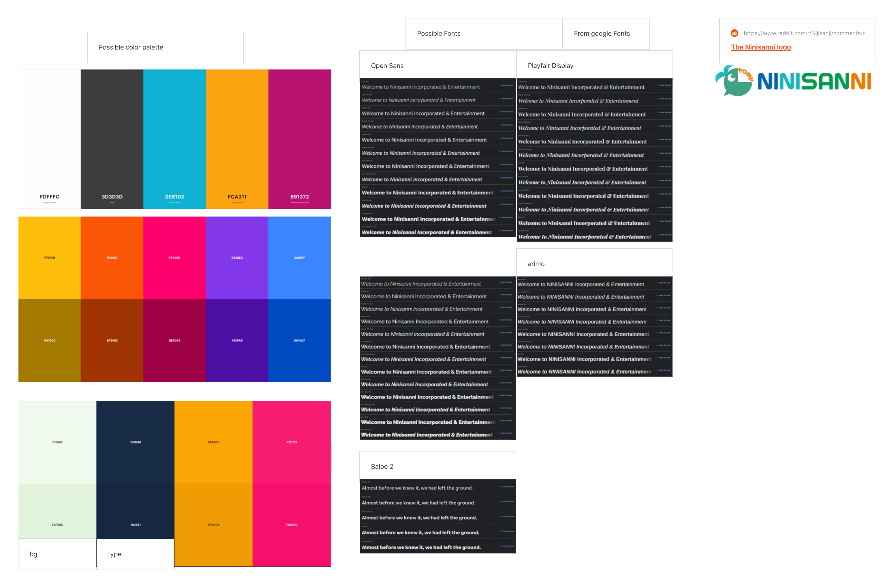
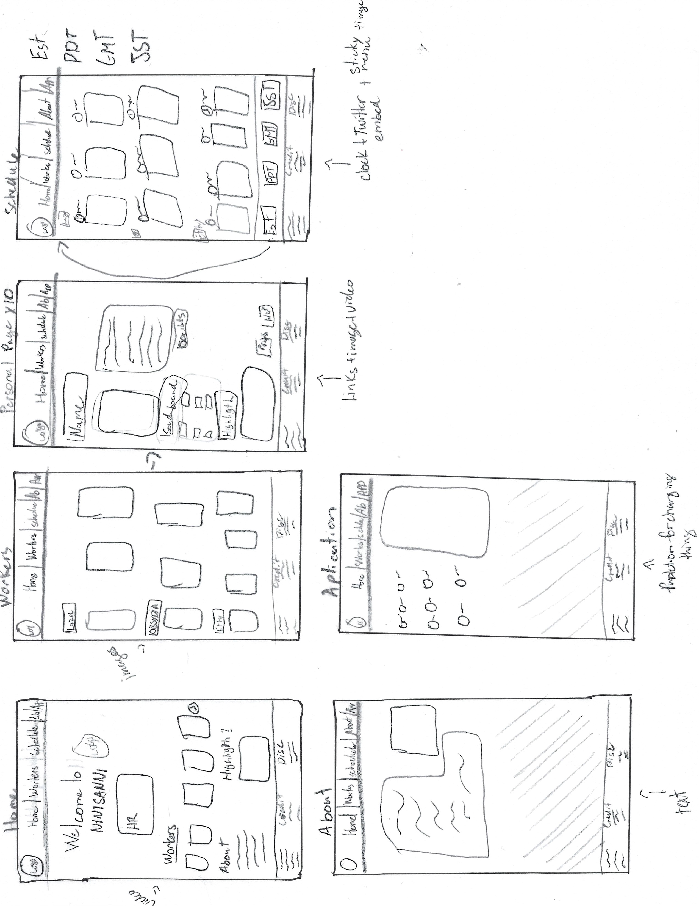

The website will be a fake company website. It will be a parody of an existing company. The website will have to be professional, be pleasing to the eyes and be easy to navigate. it will feature a home page, a schedule page, a workers page , an about page and an application page. In addition, there might be easter eggs, that will be scattered throughout the site.
First, some universal things that apply to all pages. There will be a top menu that will stay at the top when you scroll down with the logo and the name of the company on the left. the colours should be vibrant but still pleasing to look at. At the bottom of the page, there will be a credit section for everything that was on the page. An additional button will appear to allow the user to go back to the top of the page. The page will also be coded so that the window is resizable without breaking the page's format.
Next, to be able to have pleasing pages to the eyes. I will use a colour palette to give the site a uniform look. The colour palette will also aid in the navigation, as the special things will be highlighted with the accents colour. The website will most likely use vibrant colours as its palette, to appear lively and set a good mood. There may also be a dark mode for users that prefer the site less vibrant
The first page, the home page will feature the promotional video of the company. Following the video, there will be a brief paragraph about each section with links to the page. The paragraphs will be in the same order as in the menu. At the bottom, there will be links to the social media of the company.
On the second page, the schedule will be done by accessing the Twitter of the workers as they post their schedule on Twitter. it will have the schedule of all the members along with a clock for multiple time zones.
The third page will be giving an overview of the company's workers. Each of the members, all 10 of them, will have a personal page with more information about them and their role in the company. Their social media will be in their profile along with their embedded Twitter profile. There will also be videos showing the workers at their best.
The fourth page will be the about page. There will be a short text about the company and its goal. At the bottom, there will be a link to the application page.
The last page will be the apply page. The page will have a list of choices of the branches to customize your application to apply.
Moodboard 
Thumbnail Sketches 